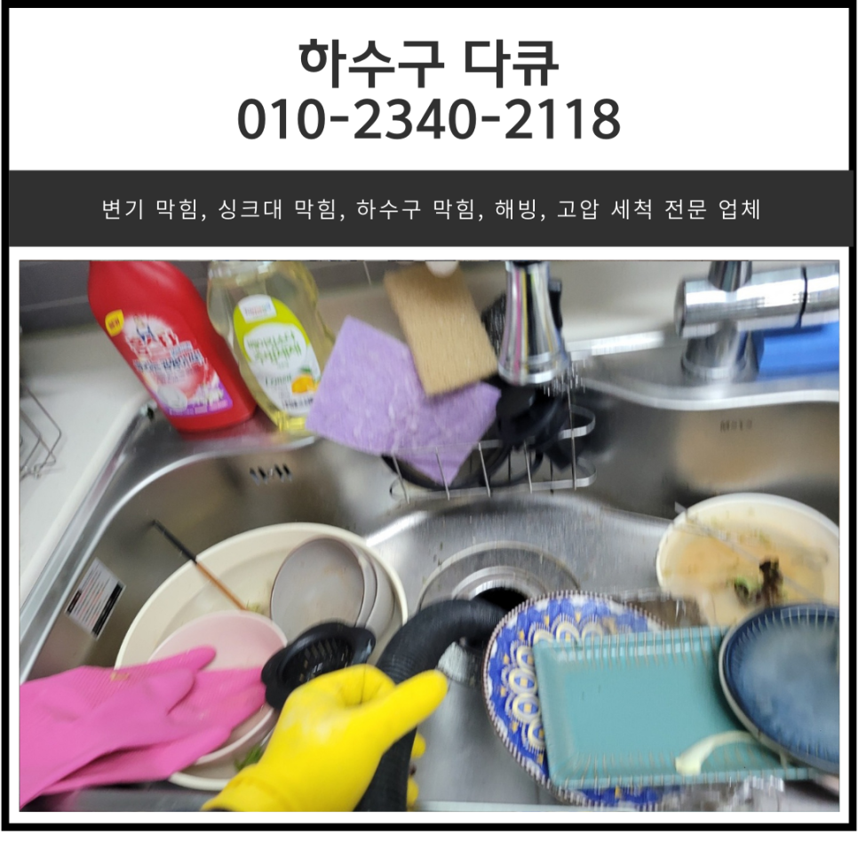
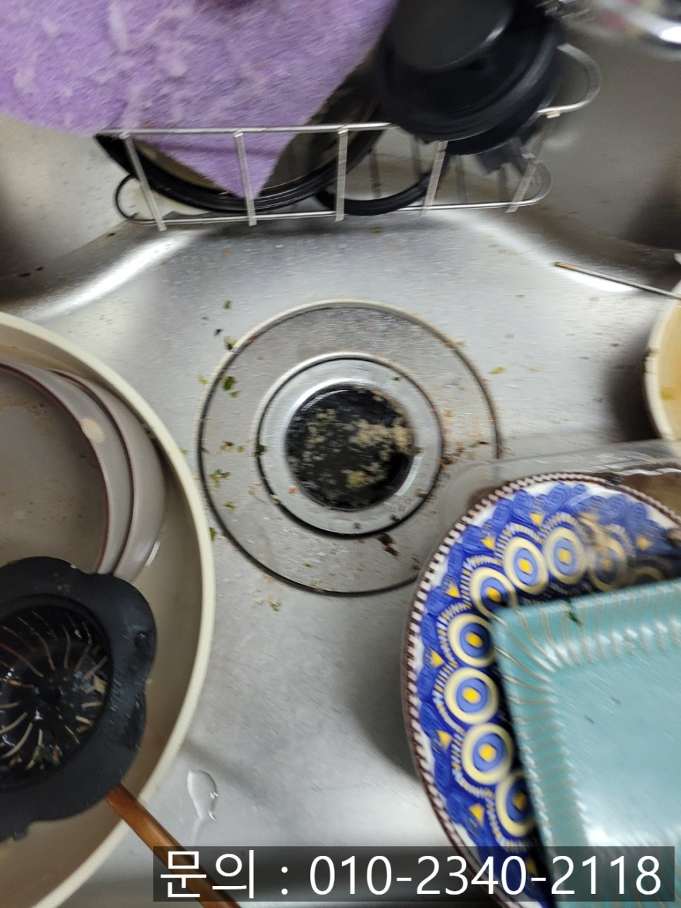
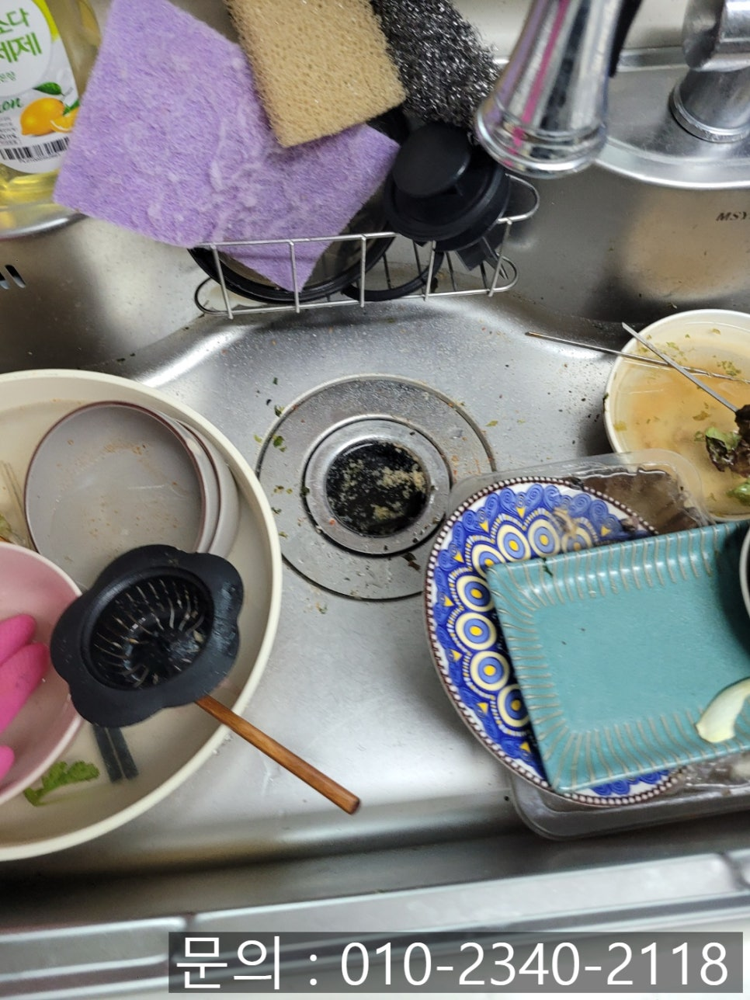
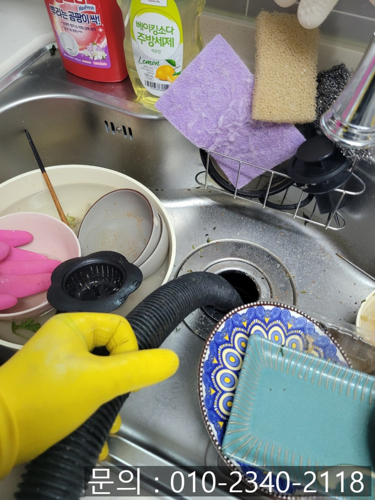
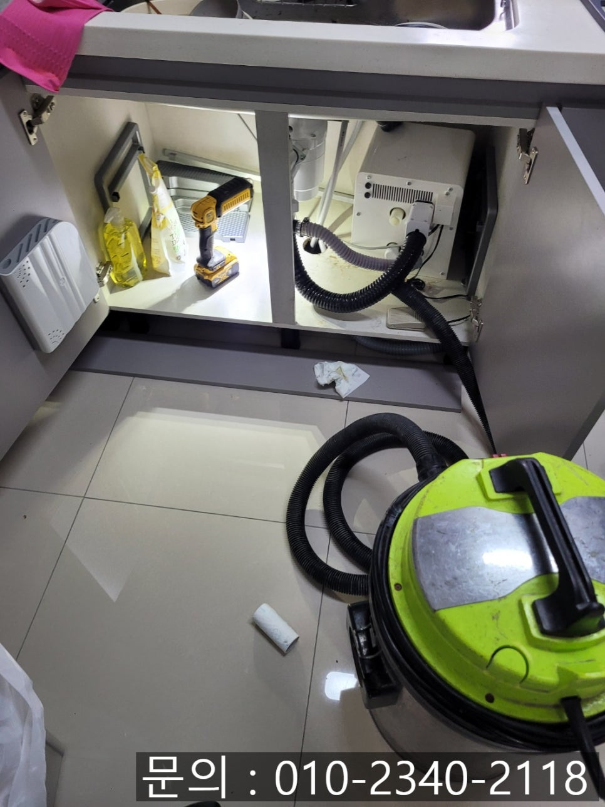
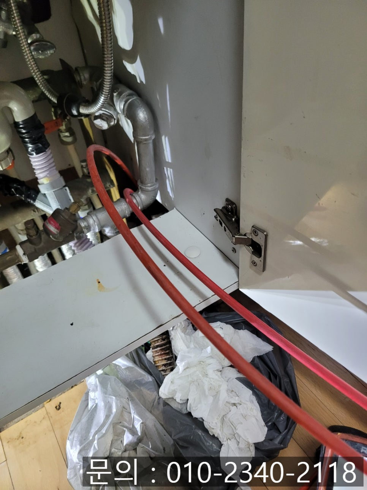
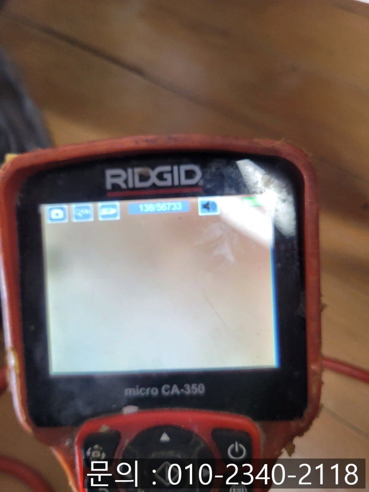

🏠 남양읍 싱크대 막힘 매송면 빌라 하수구 막혔을 때 뚫어주는 업체
화성 남양 싱크대막힘 전문 시공 후기

📋 작업 개요
- 위치: 화성 남양, 남양, 화성
- 서비스 유형: 싱크대막힘, 하수구막힘, 배관막힘, 역류해결, 뚫는업체, 배관청소, 고압세척
- 작업 일시: 2025. 3. 7. 9:20
- 업체명: 하수구수사대 (010-5615-2118)
🔍 문제 상황
안녕하세요
남양읍 싱크대 막힘, 매송면 빌라 하수구 막혔을 때 뚫어주는 업체 하수구 다큐입니다.
가정에서 제일 많은 양의 물을 사용하는 주방의 싱크대는 배수 기능이 정말 중요합니다.
식사를 하기 위해 음식을 만들 때뿐 아니라 식사 후 식기를 닦을 때도 사용한 물이 배수되지 않으면 여러 가지로 힘들어질 거예요.
그런데 갑자기 싱크대에서 사용한 물이 내려가지 않거나 반대로 역류하는 현상이 나타난다면? 정상적으로 생활하기 어렵겠죠?
음식을 만들기 어렵다 보니 끼니때마다 외식을 하거나 배달을 시켜야 하다 보니 생활비 지출이 늘어날 수밖에 없습니다.
한시라도 빨리 전문가의 도움을 받아 싱크대 막힘을 해결하는 게 가장 현명한 방법이에요.

🔎 원인 분석
💡 전문가 진단: 정밀 진단 장비를 사용하여 슬러지의 고착 여부를 판명하고 타격/세척 작업을 실시했습니다.
남양읍 싱크대 막힘으로 다녀온 현장을 사진과 함께 소개해 드릴게요.
하수구 다큐로 연락 주신 고객님은 정확히 언제부터인지 기억이 나지는 않지만, 사용한 물이 잘 내려가지 않고, 하수구 냄새가 올라오는 것 같다고 말씀하셨습니다.
화성 하수구 전문 업체를 알아보던 중 블로그를 보고 하수구 다큐로 연락을 주셨다고 하셨어요.
매송면 빌라 하수구 막혔을 때 뚫어주는 업체 하수구 다큐가 필요한 장비를 챙겨 현장에 방문해 보니 음식물 찌꺼기가 역류한 상태로 방치되어 있었어요.
물이 흘러가지 못하다 보니 식기도 세척을 못하신 상태였습니다.
음식을 만드는 공간인데 불쾌한 냄새도 발생하고 있어 빠른 해결이 필요해 보였습니다.
우선 흡입하는 힘이 좋은 석션을 사용해 음식물을 제거하는 작업부터 진행했어요.
싱크대 아래쪽에서도 음식물과 오물이 넘쳐나와 냄새가 나는 상황이다 보니 석션으로 제거해 뚫기를 시도했습니다.

🔧 작업 과정
일부 이물질은 제거되었지만 배관에 쌓인 모든 이물질을 제거하기엔 역부족이었습니다.
1차로 이물질을 제거했지만 통수가 진행되지 않아 내시경 카메라를 진입시켜 배관 내부의 상태를 파악해 보기로 했어요.
내시경 카메라가 진입하자마자 촬영한 모습이에요.
기름 슬러지로 배관이 가득 찬 상태로 붉게만 보였습니다.
주방에서 사용하고 흘려보낸 기름기를 가진 이물질들이 오랜 시간 뒤엉키고 쌓이면서 만들어졌기 때문에 뜨거운 물을 붓거나 석션 장비를 사용해도 해결되지 않기 때문에, 배관의 특징을 파악하고 상황에 맞는 방법을 선택해 작업을 진행해야 합니다.
매송면 빌라 하수구 막혔을 때 뚫어주는 업체 하수구 다큐가 이번 현장에서 사용하게 될 장비는 플렉스 샤프트입니다.
플렉스 샤프트의 경우 길고 좁은 배관으로 진입하기 쉽고 노즐이 유연해서 꺾이는 배관에도 진입하기 좋다는 장점이 있어요.
그뿐만 아니라 배관을 손상시키지 않으면서도 신속하게 배관 청소를 할 수 있어 하수구 막혔을 때 제격입니다.
배관을 막고 있는 기름 슬러지들이 오랜 시간 단단해진 상태이다 보니 한 번에 모두 제거하기는 어려워요.
내시경 카메라로 꼼꼼하게 살펴보며 여러 번 반복해야 깨끗하게 제거할 수 있습니다.
내시경 카메라를 이용해 내부를 관찰하면서 하수구 뚫어주는 작업을 계속해서 이어나갔습니다.
많은 양의 이물질이 제거되어 물길이 생겼지만 군데군데 남아있는 기름 슬러지를 제거하면서 배관의 깊은 곳까지 꼼꼼하게 점검해 드렸어요.


✅ 작업 완료
모든 이물질을 제거한 다음 배관 내부가 깨끗해진 것을 확인하고 주름 배관을 연결한 뒤 통수 테스트를 진행했습니다.
기름 슬러지가 모두 제거되고 막힘없이 시원하게 흘러내려 가는 것을 보니 안심이 되고 기분 좋게 장비를 챙겨 철수할 수 있었습니다.
경기도 화성시 향남읍 상신하길로328번길 26 5층 505호 5호




⚠️ 주방 싱크대 배관 막힘 예방 수칙
- ✅ 기름기가 묻은 식기나 프라이팬은 설거지 전 키친타올로 반드시 기름때를 닦아내세요.
- ✅ 주기적으로 싱크대 개수대에 뜨거운 물을 가득 받아 한 번에 내려 배관 내부 기름을 씻어내세요.
- ✅ 배수구 거름망을 미세한 필터로 사용하시고 음식물 찌꺼기가 틈으로 새어 들지 않게 관리하세요.
- ✅ 베이킹소다와 식초를 뜨거운 물과 함께 일주일에 한 번씩 부어주면 배관 살균과 막힘 예방에 좋습니다.
💡 핵심 정리
- 확실한 장비 작업(내시경 점검 및 샤프트 스케일링)으로 원인을 뿌리 뽑습니다.
- 작업 후 1년 이내에 동일한 부위 재발 시 100% 무상 A/S 서비스를 보장합니다.
- 서울 · 경기 · 인천 전 지역에 24시간 언제든 긴급 출동할 수 있도록 항시 대기 중입니다.
❓ 자주 묻는 질문 (FAQ)
🚨 화성 남양 싱크대막힘 문제로 고민이신가요?
정확한 원인 진단과 확실한 시공으로 재발 없는 해결을 약속드립니다.
24시간 긴급 출동 | 서울 · 경기 · 인천 전지역 | 1년 내 재발 시 무상 A/S